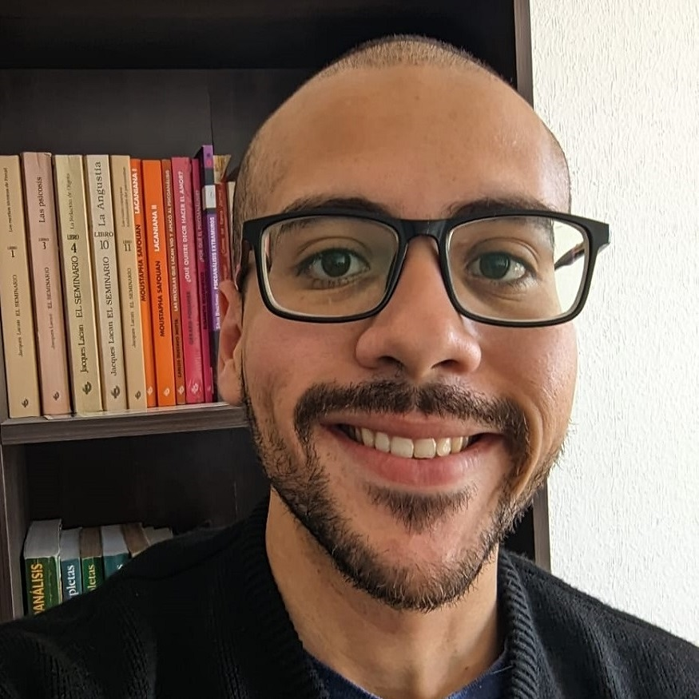
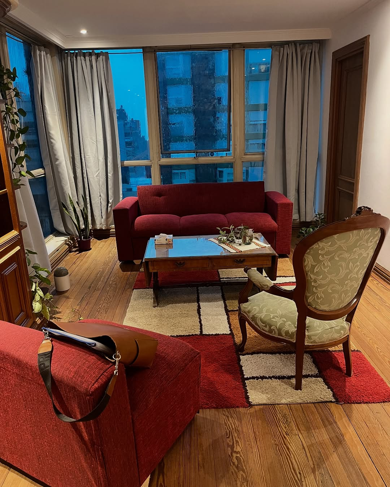
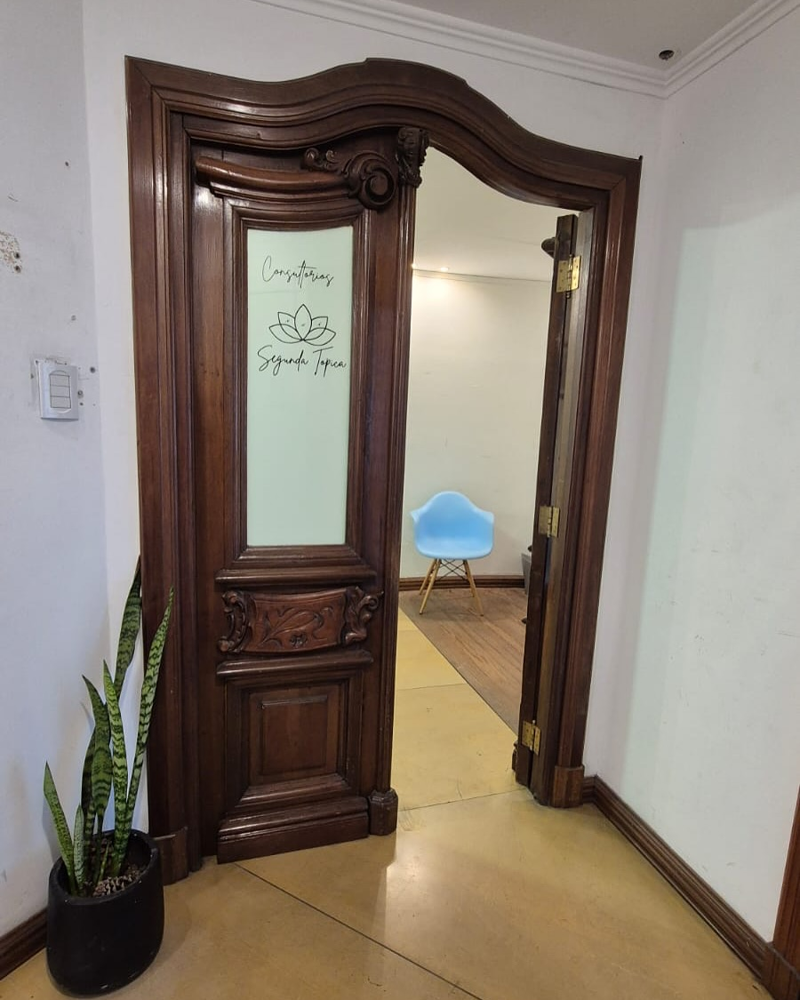

Benjamín Campos — Psicoanalista (Mat. 9449)
Atención presencial en Rosario y virtual para quienes estén en cualquier parte del mundo. Trabajo con niños, adolescentes y adultos desde una orientación psicoanalítica.
10 reseñas en Google · 5 estrellas"Su forma de escuchar y acompañar genera un espacio seguro donde puedo expresarme libremente."— Florencia · Mundopsicólogos, septiembre 2025

Psicoanalista egresado de la Universidad Nacional de Rosario con un promedio de 9,12, donde también me desempeñé como ayudante en la cátedra de Clínica 1, de orientación psicoanalítica. Cuento con formación de posgrado en clínica con niños y adolescentes, y trayectoria en instituciones escolares y centros educativos terapéuticos, especialmente en el acompañamiento de personas con discapacidad.
A los 17 años viajé solo desde Catriel, Río Negro, a Rosario para estudiar. Entiendo lo que cuesta construir desde cero en una ciudad nueva, sin la red de siempre cerca.
Universidad Nacional de Rosario · Promedio 9,12
N.º 9449 · Colegio de Psicólogos de Santa Fe
Ayudante de cátedra en Clínica 1 — orientación psicoanalítica
Formación en clínica con niños y adolescentes
Participación en grupos de estudio en Segunda Tópica Salud Mental
Participación en el seminario anual "El psicoanálisis hoy: Lo anacronico-lo contemporaneo" dictado por Nicolas Vallejo
Mi práctica se orienta exclusivamente desde el psicoanálisis: un espacio de escucha singular donde la palabra puede circular sin prisa y sin fórmulas. No se trata de aplicar técnicas ni de dar consejos, sino de abrir un lugar para que cada persona pueda construir su propia respuesta frente a lo que le genera sufrimiento.
Si estás buscando herramientas, técnicas o un enfoque cognitivo-conductual, con gusto te oriento hacia un colega que se ajuste mejor a lo que necesitás. Lo que ofrezco es otra cosa: tiempo y escucha.
Trabajo principalmente con la clínica de la neurosis en adultos y adolescentes.
Lo que más suelen valorar quienes consultan es que las sesiones no se parecen a una evaluación ni a un consejo. Lo que traés se escucha como es, sin que nadie te diga qué deberías haber hecho.
Viví esa experiencia desde los 17 años, cuando dejé Catriel para estudiar en Rosario. Sé lo que es llegar a un lugar nuevo sin tu red, reconstruir desde cero y no tener a mano a quien uno necesita.
Escribir por WhatsAppTrabajo actualmente con pacientes en Andorra, España y otras partes de Europa.
Sesiones por videollamada, coordinadas según tu huso horario.
Accesibles para pacientes en el exterior. Consultá en pesos o dólares según tu ubicación.
Escribime por WhatsApp y coordinamos una primera entrevista sin compromiso.
Un espacio privado y tranquilo pensado para cuidar la confidencialidad y el encuadre de cada sesión, ubicado en el centro de Rosario. También ofrezco atención virtual para quienes prefieran esa modalidad o se encuentren en otra ciudad o en el exterior.


Córdoba 844, Rosario, Santa Fe
Presencial y virtual
Accesibles · Consultá por WhatsApp
Parte de mi práctica se extiende hacia la escritura y el pensamiento sobre cine y psicoanálisis, un cruce que orienta también mi mirada clínica.
Reflexiones sobre el enamoramiento desde el psicoanálisis: la elección de objeto, el ideal del yo y lo que une a dos personas que no saben exactamente por qué.
Leer nota →Un recorrido por la noción freudiana de trabajo de duelo a través de dos películas que lo abordan desde ángulos opuestos: el tiempo largo del duelo elaborado y la abolición de la memoria como respuesta al dolor.
Leer libro completo →Son enfoques distintos con objetivos diferentes. La TCC trabaja con técnicas concretas para modificar pensamientos y conductas, y suele tener un número definido de sesiones. El psicoanálisis propone un espacio de escucha más abierto, orientado a entender el malestar en su singularidad — no a resolverlo con herramientas, sino a encontrarle un sentido propio. Si buscás técnicas o un enfoque estructurado por objetivos, la TCC puede ser más adecuada para vos; con gusto te oriento a un colega.
La primera entrevista es un espacio para que puedas contarme lo que te trae, sin compromiso de continuidad. No es un diagnóstico ni una evaluación: es una conversación donde puedo entender qué te pasa y vos podés ver si este espacio te resulta útil. Después de ese encuentro, si los dos queremos seguir, acordamos el encuadre: frecuencia, horario y honorarios.
Lo más habitual en psicoanálisis es una sesión semanal, aunque esto se define en función de cada proceso y de las posibilidades de cada persona. La duración de una sesión es variable — no hay un tiempo fijo como en otras modalidades.
Actualmente no trabajo con obras sociales ni prepagas. Los honorarios son acordados directamente con cada persona según su situación. Si el costo es un obstáculo, podemos hablarlo — trabajo con honorarios flexibles y con escala móvil.
Las sesiones virtuales funcionan por videollamada, en el horario que acordemos según tu huso horario. El encuadre es el mismo que el presencial: un espacio reservado, privado y sin interrupciones de tu lado, y del mío también. Trabajo actualmente con pacientes en Andorra, España y otras partes del mundo.
Es exactamente para eso que existe la primera entrevista. No hace falta tener claro el problema ni saber si "lo tuyo" amerita terapia. Muchas personas llegan sin poder nombrar bien lo que sienten — y eso en sí mismo ya es un buen punto de partida para el trabajo analítico.
Sí. Atiendo niños y adolescentes de forma presencial en Rosario, y en algunos casos también de forma virtual. Cuento con formación de posgrado en clínica con niños y adolescentes, y trayectoria en instituciones educativas y centros terapéuticos.
Córdoba 844, Rosario, Santa Fe
Presencial en Rosario · Virtual a todo el mundo
Si estás pensando en empezar un proceso, escribime y coordinamos. No hay compromiso en la primera consulta.
Escribir por WhatsApp Ver perfil en Mundopsicólogos